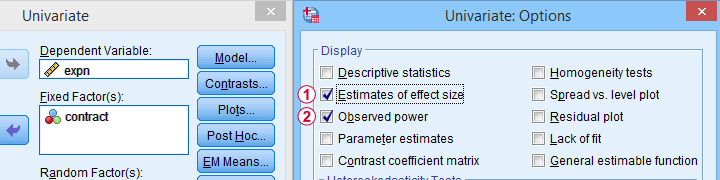

统计功效（Power）——快速入门
作者：Ruben Geert van den Berg，归类于统计学A-Z
在统计学中，统计功效（Power），也称为检验效能，是指当实际上存在效应时，正确拒绝错误的零假设的概率。
- 功效计算示例
- 功效与显著性水平（Alpha Level）
- 功效与效应量（Effect Size）
- 功效与样本量（Sample Size）
- 功效计算的3个主要原因
- 功效计算软件 - G*Power
统计功效——最小化示例
- 在某个国家，智商（IQ）与薪水的人群相关性 ρ = .10。
- 一位科学家抽取了 N = 10 人的样本，发现样本相关性 r = .15。
- 他检验了（错误的）零假设 H₀，即 ρ = 0。该检验的显著性水平，p = .68。
- 由于 p > .05，大于他选择的显著性水平 alpha，他没有拒绝他（错误的）零假设，即 ρ = 0。
现在，给定样本量 N = 10 和人群相关性 ρ = 0.10，正确拒绝零假设的概率是多少？这个概率被称为功效，在统计学中表示为 (1 - β)。对于上述例子，(1 - β) 只有 .058（大约 6%），如下所示。
 如果人群相关性 ρ = .10 并且
如果人群相关性 ρ = .10 并且  我们抽样了 N = 10 名受访者，那么
我们抽样了 N = 10 名受访者，那么  我们需要找到一个绝对样本相关性 | r | > .63 才能在 α = .05 水平拒绝 H₀。
我们需要找到一个绝对样本相关性 | r | > .63 才能在 α = .05 水平拒绝 H₀。  找到这个相关性的概率只有 .058。
找到这个相关性的概率只有 .058。
因此，即使 H₀ 是错误的，我们也不太可能真正拒绝它。不拒绝错误的 H₀ 被称为犯了第二类错误（Type II error）。
第一类错误（Type I error）和第二类错误（Type II error）
任何零假设都可能是真的或假的，我们可能拒绝也可能不拒绝它。这导致了以下4种情况。
| 现实：H₀ 是真的 | 现实：H₀ 是假的 | |
|---|---|---|
| 决策：拒绝 H₀ | 第一类错误（Type I error） 概率 = α |
正确的决策 概率 = (1 - β) = 功效（Power）**** |
| 决策：保留 H₀ | 正确的决策 概率 = (1 - α) |
第二类错误（Type II error） 概率 = β |
正如您可能猜到的，我们通常希望检验的功效尽可能高。但在研究影响功效的因素之前，让我们先尝试了解功效计算是如何实际运作的。
功效计算示例
一家制药公司想要证明他们治疗高血压的药物确实有效。他们预期如下：
- 在一些未经治疗的人群中，平均血压为 160 mmHg；
- 他们期望他们的药物将血压降低到大约 154 mmHg；
- 标准差应在 8 mmHg 左右（两个人群）；
- 他们计划使用独立样本 t 检验，在 α = 0.05 的显著性水平下，每个子样本的 N = 20。
考虑到这些因素，这项研究的功效是多少？或者 - 换句话说 - 治疗人群和未治疗人群之间的平均血压相等的零假设 H₀ 被拒绝的概率是多少？
显然，在研究完成之前，没有人知道这项研究的结果。但是，我们确实知道最可能的结果：它们是我们的人群估计值。因此，让我们先假设我们会完全找到这些结果，并将它们输入到 t 检验计算器中。
在Excel中计算预期样本量，平均值和标准差的t检验
我们预计 p = 0.023，因此我们预计会拒绝 H₀ 。 这是基于自由度 df = 38 的 t 分布（总样本量 N = 40 - 2）。 如果人群平均值差异为 6 mmHg（160 - 154），我们预计会发现 t = 2.37。
现在，在备择假设 Hₐ 下的这个预期（或平均）t = 2.37 被称为非中心性参数（Noncentrality Parameter，NCP）。NCP 告诉我们 t 在某些精确的备择假设下是如何分布的，因此允许我们估计某些检验的功效。下图说明了这是如何运作的。

- 首先，我们的 H₀ 是使用自由度 df = 38 的中心 t 分布进行检验的；
- 如果我们在 α = 0.05（双尾）水平下进行检验，如果 t < -2.02（左临界值）或如果 t > 2.02（右临界值），我们将拒绝 H₀；
- 如果我们的备择假设 Hₐ 完全正确，则 t 服从自由度 df = 38 且 NCP = 2.37 的非中心 t 分布；
- 在这种非中心 t 分布下，找到 t > 2.02 的概率 ≈ 0.637。因此，这大致是我们拒绝 H₀ 的概率 - 或者我们第一个场景的功效 (1 - β)。
这里需要注意的一点是，如果 t < -2.02，我们也会拒绝 H₀，但在我们的第一个场景中，这种概率几乎为零。精确的计算可以从下面的 SPSS 语法 中复制。
***输入选择的alpha和预期的NCP作为原始数据。
data list free/alpha ncp.
begin data
0.05 2.37
end data.
***计算左（lct）和右（rct）临界t值和power。
compute lct = idf.t(0.5 * alpha,38).
compute rct = idf.t(1 - (0.5 * alpha),38).
compute lprob = ncdf.t(lct,38,ncp).
compute rprob = 1 - ncdf.t(rct,38,ncp).
compute power = lprob + rprob.
execute.
***显示所有值的小数点后3位。
formats all (f8.3).功效与效应量（Effect Size）
就像我们刚才看到的，估计功效需要指定
- 一个精确的零假设和
- 一个精确的备择假设。
在前面的例子中，我们的科学家们有一个精确的备择假设，因为他们对人群平均值和标准差有非常具体的想法。然而，在大多数应用研究中，我们对这样的人群参数一无所知。这就提出了一个问题：我们如何获得一个精确的备择假设？
对于大多数检验，备择假设可以被指定为一个效应量度量：一个结合了几个平均值、方差和/或频率的单个数字。像这样，我们从需要一堆未知参数变为只需要一个未知参数。
更棒的是：对于效应量度量，存在广泛认可的经验法则。概述显示在这个 Google 表格中，部分显示如下。
在应用研究中，我们经常使用 G*Power 来估计功效。下面的截图复制了我们针对血压药物研究的功效计算示例。
G*Power 从两个平均值和标准差计算效应量和功效
请注意，在 G*Power 中估计功效只需要
单个估计的效应量度量。可以选择，G*Power 会根据您的样本平均值和标准差为您计算它。 用于检验零假设的显著性水平 alpha - 通常为 0.05 - 和 一个或多个样本量
现在让我们来看看这 3 个因素是如何与功效相关的。
影响功效的因素
下图简要概述了 3 个因素如何与功效相关。
现在让我们更仔细地看看每一个因素。
功效与显著性水平（Alpha Level）
在其他条件相同的情况下，增加 alpha 会增加功效。对于我们的示例计算，如果我们在 α = 0.10 而不是 0.05 下进行检验，则功效从 0.637 增加到 0.753。
更高的 alpha 水平会导致更小（绝对值）的临界值：如果 t > 1.69 而不是 t > 2.02，我们已经拒绝了 H₀。因此，指示 (1 - β) 的浅蓝色区域增加。我们基本上需要与 H₀ 较小的偏差才能达到统计显著性。
然而，增加 alpha 是有代价的：它增加了犯第一类错误（Type I error）（当 H₀ 实际上为真时拒绝 H₀）的概率。因此，通常不赞成在 α > 0.05 下进行检验。简而言之，增加 alpha 基本上只是通过增加另一个问题来减少一个问题。
功效与效应量（Effect Size）
在其他条件相同的情况下，更大的效应量会导致更高的功效。对于我们的示例，如果我们认为 Cohen’s D = 1.0 而不是 0.8，则功效从 0.637 增加到 0.869。
更大的效应量会导致更大的非中心性参数（NCP）。因此，在 H₀ 和 Hₐ 下的分布相距更远。这增加了指示该检验功效的浅蓝色区域。
但请记住，我们可以估计但不能选择某些人群效应量。如果我们高估了这种效应量，我们将相应地高估我们检验的功效。因此，我们通常不能通过增加效应量来增加功效。
一个有争议的例外是通过修改研究设计或分析来增加效应量。例如，通过向分析中添加协变量，方差分析（ANOVA）中治疗效应的(部分)eta 平方可能会增加。
功效与样本量（Sample Size）
在其他条件相同的情况下，更大的样本量会导致更高的功效。对于我们的示例，将总样本量从 N = 40 增加到 N = 80 会将功效从 0.637 增加到 0.912。

功效的增加源于我们的分布相距更远。这反映了非中心性参数（NCP）的增加。但是为什么 NCP 会随着更大的样本量而增加呢？
好吧，回想一下，对于 t 分布，NCP 是在 Hₐ 下的预期 t 值。现在，t 的计算公式为
\[t = \frac{\overline{X_1} - \overline{X_2}}{SE}\]
其中 \(SE\) 表示平均值差异的标准误（standard error）。反过来，\(SE\) 的计算公式为
\[SE = Sw\sqrt{\frac{1}{n_1} + \frac{1}{n_2}}\]
其中 \(S_w\) 表示结果变量的估计人群标准差（SD）。这个公式表明，随着样本量的增加，\(SE\) 会减小，因此 t（以及 NCP）会增加。
除此之外，自由度也会增加（对于我们的示例，从 df = 38 增加到 df = 78）。这会导致略小（绝对值）的临界 t 值，但这种效应非常小。
简而言之，增加样本量是增加某些检验功效的可靠方法。
功效与研究设计
除了样本量、效应量和 α 之外，研究设计也可能影响功效。虽然没有确切的公式，但一些一般准则是
- 在其他条件相同的情况下，被试内设计往往比被试间设计具有更大的功效；
- 对于协方差分析（ANCOVA），包括一个或两个协变量往往会增加证明治疗效果的功效；
- 对于多元回归，随着模型中添加更多预测变量，每个单独的预测变量的功效往往会降低；
功效计算的 3 个主要原因
应用研究中的功效计算有 3 个主要目的：
- 在数据收集之前计算所需的样本量。这包括估计效应量并选择 α（通常为 0.05）和所需的功效（1 - B），通常为 0.80；
- 在收集某些计划分析的数据之前估计功效。这需要指定预期的样本量，选择 α 并估计预期哪些效应量。如果估计的功效较低，则可以取消计划的研究，或者以更大的样本量进行研究；
- 在收集和分析数据后估计功效。此计算基于实际样本量、用于检验的 α 和观察到的效应量。
G*Power 使不同类型的功效分析变得简单
功效计算软件 - G*Power
G*Power 是一款可免费下载的软件，用于运行上述和许多其他功效计算。其功能包括
- 从描述性统计信息（主要是样本平均值和标准差）计算效应量；
- 计算功效、所需的样本量、所需的效应量等等；
- 创建可视化功效、效应量和样本量如何与许多不同的统计程序相关的图表。下图显示了多元线性回归的一个示例。
 在给定所需功效、选择的 α 和 3 个估计的效应量的情况下，多元线性回归所需的样本量
在给定所需功效、选择的 α 和 3 个估计的效应量的情况下，多元线性回归所需的样本量
总而言之，我们认为 G*Power 是一款出色的软件，我们强烈建议使用它。我们能想到的唯一缺点是它需要相当不寻常的效应量度量。一些例子是
- 方差分析（ANOVA）的 Cohen’s f 和
- 卡方检验的 Cohen’s W。
这很尴尬，因为 APA（以及可能因此）大多数期刊文章通常建议报告
- 方差分析的（部分）eta 平方和
- 列联表系数或（更好的是）Cramér’s V 用于卡方检验。
这些也是我们通常从 SPSS 或 JASP 等统计软件包中获得的度量。幸运的是，G*Power 转换了一些度量和/或从描述性统计信息计算它们，就像我们在 此截图 中看到的那样。
{kind=link}
功效计算软件 - SPSS
在 SPSS 中，可以从 GLM、UNIANOVA 和（已弃用的）MANOVA 过程中获得观察到的功效（observed power）。请记住，GLM - 通用线性模型（General Linear Model）的缩写 - 确实非常通用：它可用于各种分析，包括
- （多元）线性回归；
- t 检验；
- 协方差分析（ANCOVA）；
- 重复测量方差分析（repeated measures ANOVA）。
 从 分析（Analyze）- 通用线性模型（General Linear Model）- 单变量（Univariate）- 选项（Options）中选择观察到的功效（Observed power）
其他功效计算（所需样本量或在数据收集之前估计功效）已添加到 2020 年发布的 SPSS 27 版本中。
在 SPSS 27 及更高版本中找到的功效分析
在我看来，SPSS 功效分析是一种可悲的尝试，旨在与 GPower 竞争。如果您不相信我，只需尝试同时在两个程序中运行几个功效分析即可。如果您相信我，请忽略 SPSS 功效分析，直接选择 GPower。
感谢您的阅读。